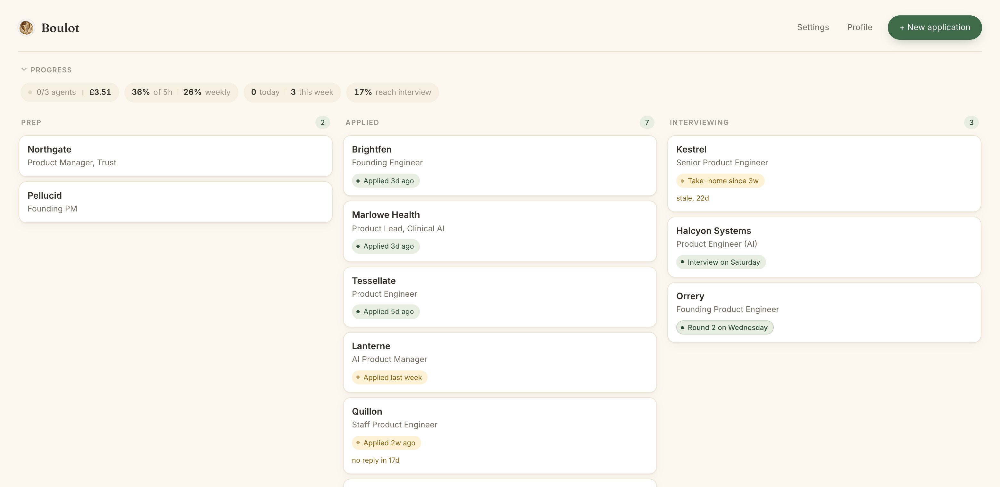
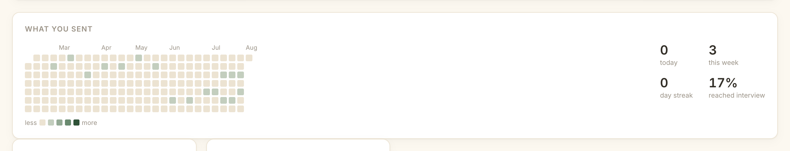
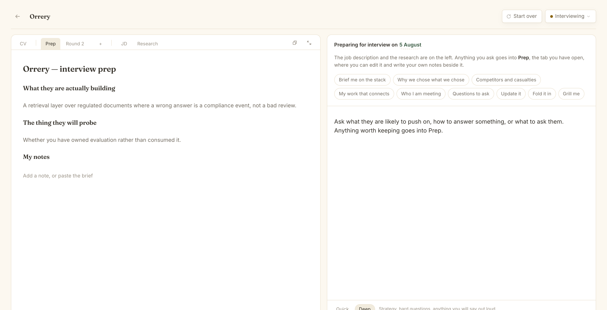
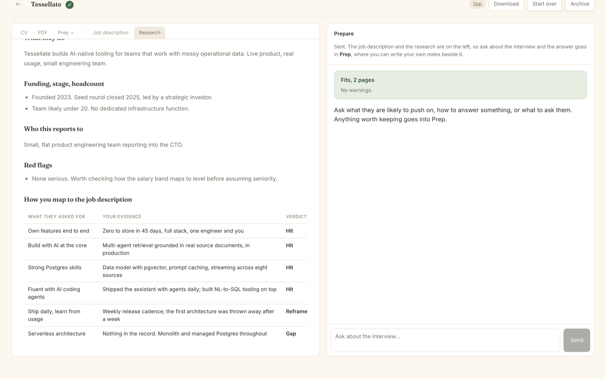
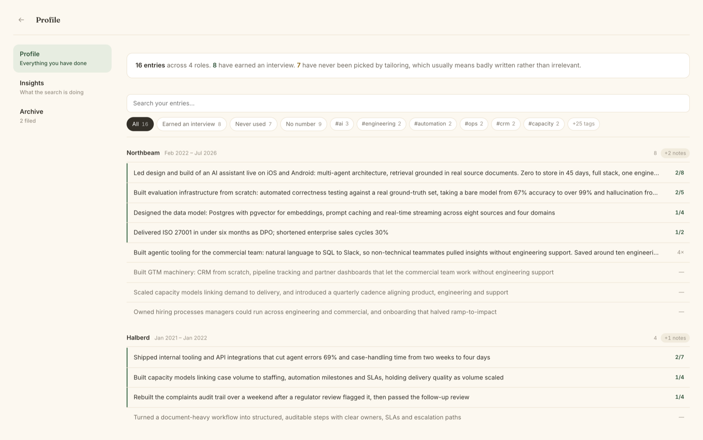

Job hunting grinds people down because you start from nothing every time and never find out what worked. Boulot keeps the record: everything you have done, every version you sent, and which ones got a reply. It writes from that, learns from what comes back, and waits when you need to stop for a week.
Everyone talks about the screening bots. The thing that actually exhausts people is quieter than that.
The same achievements, reworded for the ninth time, from a CV you last opened in March. Nothing you learned writing the last one carries into the next.
Twelve versions of your summary have gone out. You could not say which one earned a reply, because nobody keeps that, so you keep guessing and calling it strategy.
A search asks for your best writing exactly when your confidence is lowest, and it punishes you for taking a week off by making you reconstruct where you were.
Boulot holds the parts you should not have to carry in your head, so the effort you have already spent is still there next week. You bring the judgement. It brings the memory.
I was deep in a bad market and tired of firing CVs into the void, so I built this for myself. What it did on the search that mattered:
One person, one search, and yours will be your own numbers. I still use it daily, which is the only reason it keeps getting better. It is free and open source, because the market is hard enough without another subscription and this is my own work to give away.
Boulot lives on your computer. No account, no cloud, just a folder that is yours. Here is the loop it runs, and it runs at whatever pace you are going.
Paste your CV once. It builds a record of every role, every achievement and every number, tagged so the right ones can be found later. Nothing is written from scratch again, and nothing gets invented: each application is assembled from things that are already true.
Roles move from "maybe" to "applying" to "done." It researches each company for you: news, funding, who you'd report to, any red flags. And it helps you find the ones actually worth your time.
For every role it pulls the right bullets from your master CV, then three agents argue over the draft: the hiring manager, a sharp second reader, and a strategist hunting your hidden strengths. They go at it until the draft holds up, and you get the version that survived.
When they reply, the app changes shape: a prep document opening with what the company is actually building, the thing they will probe, questions worth asking, and your number. Add a tab for each round and it carries what happened in the last one into the next. Ask for a mock and you get an interviewer who interrupts vague answers and asks for the figure.
It keeps what most tools throw away: which headline earned an interview, which summary never got a reply, what you learned when one ended. Correct it once and the correction sticks, in a file you can read. Month three is not month one repeated, which is the whole reason to keep the record.
Every instruction the agent works to is a plain markdown file in your folder. How a CV gets written, what counts as a weak bullet, the tone it uses, what it must never claim. Open any of it, disagree with it, rewrite it. Tell it you hate a phrasing and it writes that down as a rule and applies it from then on. A tool that coaches you to somebody else's idea of a good candidate is optimising for their view of the market, and you are the one who has to sit in the interview.
Screenshots from the app. The person and every application are invented, because yours would be on your own machine and nowhere else.





Two things it prints that nothing else on your machine will.
Writing a CV, rendering it, finding it runs to three pages and guessing what to cut is a loop that costs an evening. Boulot measures the real page and tells you the number.
─── FIT REPORT ─────────────────────────── Pages: 3 (target 2) ✗ Over by ~140mm Weight by section: 58mm 10% SUMMARY 345mm 59% EXPERIENCE 45mm 8% SKILLS ← entirely past the mark → Cut ~2093 characters from EXPERIENCE. What spills off the end is not what to cut.
The headline and the summary are the most rewritten sentences on any CV, and most tools forget every version the moment it is sent. Boulot keeps the score and starts the next one from something that has already worked.
WHAT HAS WORKED from 29 CVs on file, 5 reached interview HEADLINE "Product engineer for regulated, AI-native systems" → 2 of 3 reached interview SUMMARY "I take models from demo to dependable…" → 1 of 1 reached interview BULLETS 2 of 9 → interview Led design and build of an AI assistant… 2 of 5 → interview Built evaluation infrastructure from scratch…
Nothing to fill in. It reads the CVs you already sent and the outcomes you already recorded.
Most of these are built to send more, faster. This one is built so that the fortieth application is better than the first because of the thirty-nine before it.
| Auto-apply bots | AI recruiter agents | Trackers + autofill | Boulot | |
|---|---|---|---|---|
| Built for | Volume | Matches in their network | Staying organised | Making each application great |
| Your CV is | One PDF, sprayed everywhere | A profile in their database | Scored by a bolt-on | Rebuilt & stress-tested per role |
| Interview prep | None | Light | Light | A real, tough mock |
| After a rejection | Nothing | A new match | You update a label | It logs why, and writes the next one differently |
| If you stop for a week | Keeps firing | Keeps matching | Goes stale | Waits, and still knows where you were |
| Whose advice it gives | None | Their playbook, fixed | Generic tips | Yours, in files you can edit |
| Your data lives | Their cloud | Their cloud | Their cloud | On your laptop |
| Cost | Monthly fee | Free, but their goals ≠ yours | Monthly fee | Free & open source |
About two minutes to set up. From then on you press play and it does the work. When you want something changed, you say so in plain English.
One command, or the Mac app. It opens in your browser, on your machine. No account.
It builds your record from it: every role, every achievement, tagged so the right ones can be picked for each job. That record is what every application is built from, and it never invents anything.
It researches the company, maps every requirement to your evidence, writes the CV, has three agents argue over it, and renders a PDF that it measures against a real page.
Applied, interviewing, archived. The board is how it learns. Each outcome, and anything you write about why, feeds the next application.
Talking to it sounds like this:
Getting it
Not a waitlist and not a demo. The whole thing is finished and free: the board, the agents, the CV that measures itself against a real page, the record that rewrites itself as you apply. Nothing is hosted, so your career never leaves your laptop.
git clone https://github.com/ElliotJLT/boulot-os cd boulot-os pnpm install && pnpm start
Opens at localhost:4319. It asks your name, you paste your CV once, and it builds your record: every role, every achievement, tagged so it can pick the right ones for each job. Then paste a job link and it writes the CV, the cover letter and the PDF.
pnpm desktop compiles a real 46 MB .dmg that installs like anything else. A signed download is next.What is coming, and what has been ruled out and why, is on the roadmap. If you want the one-click version the moment it exists, say so and I will send it to you.
Boulot is free and open source. The AI behind it is not free: you either point it at a Claude subscription you already pay for, or at an API key, where a full application costs pennies rather than pounds. Nothing goes to me either way.
Onto your own laptop, and nowhere else. There is no account and no server of mine. Your profile, your CVs and every application stay in a folder you own, and the app is set up so they can never be committed to git by accident. The only thing that leaves is the text you send to the AI you chose.
It is built not to, and that is the rule it is checked against hardest. Every CV is assembled from a master record of things you actually did; it can reword and reorder, never invent. Where the job asks for something you have not done, it says so rather than papering over it.
No. It opens in your browser like any other app: paste a job link, press play, read what it wrote. If you are comfortable in a terminal there is a Claude Code path too, but it is not the main road.
No, and it will not. Auto-apply is the thing that broke reply rates in the first place. Boulot writes the application; you read it, change what you want, and send it.
Yes, directly. The CV sits in an editor next to the preview, so a small fix is a small fix rather than a regeneration. Everything is plain markdown in a folder, so you can open it in anything.
Yes, and this is the part most tools do not give you. The instructions the agent follows are markdown files in your own folder, not a prompt somebody else ships and you never see. You can read every rule, argue with it, and rewrite it. Corrections you make in conversation get written down as rules and applied from then on, so the thing gets more like you rather than more like its default.
Because the market is hard enough without another subscription, and because it is entirely my own work and mine to give away. I built it for my own search first. It worked, and charging people for a way out of a situation I was recently in did not sit right.
It is free, open source, and mine to give away. If you want to use it, want a hand setting it up, or want to talk about building AI that makes the person better rather than louder, get in touch.